TIANMA · INTERNAL TRAINING
功能讲解 · 操作演示 · 能力边界 · 业务应用
01 · BACKGROUND
治理 · 连接 · 沉淀
降低内部材料流向未批准外部平台的风险
逐步连接内部知识与业务系统
沉淀企业可复用的智能体与工具
02 · TRAINING MAP
03 · 首页智能体
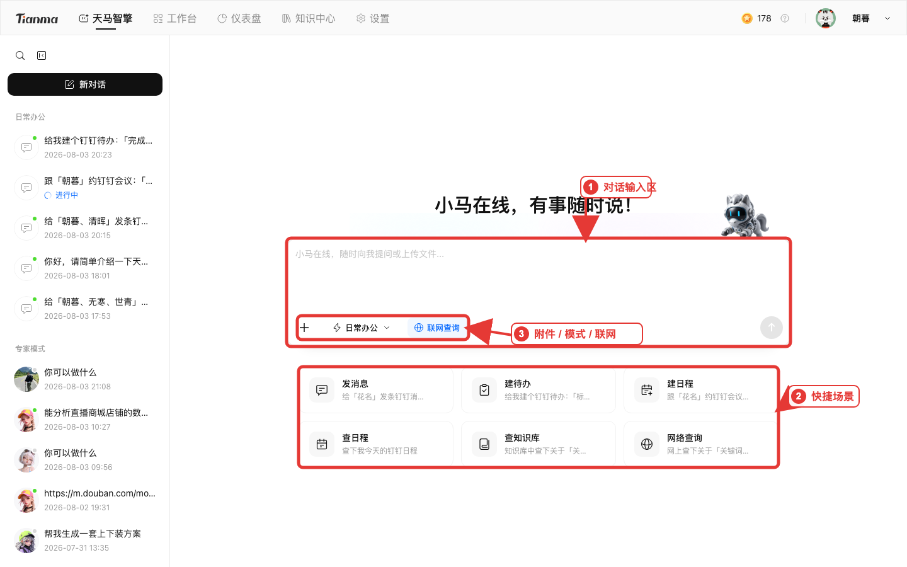
04 · 两种模式
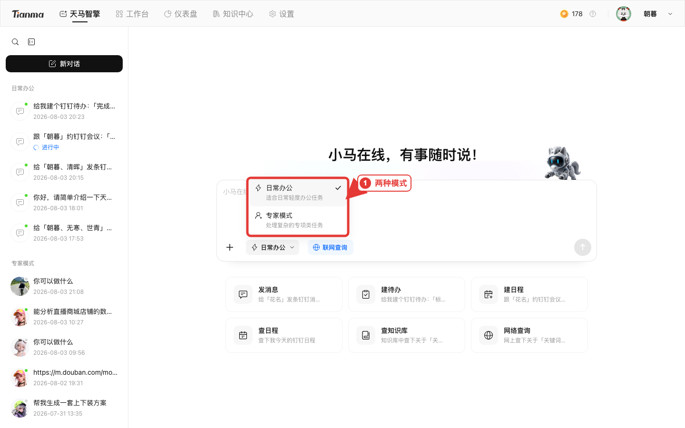
05 · 模式判断
通用办公 / 协同动作 → 日常办公
专业方法 / 专属知识 → 专家模式
混合任务 → 先专家分析，后日常落地
最后都要人工复核
06 · 专家模式
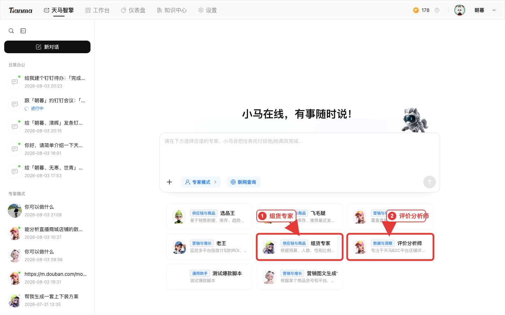
07 · 组货专家
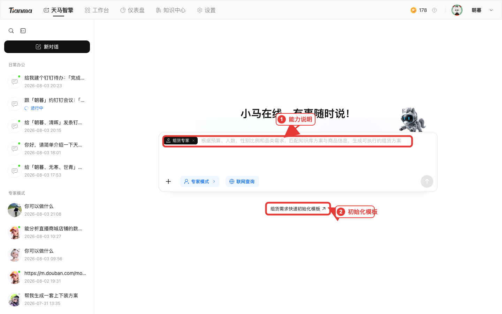
08 · 评价分析师
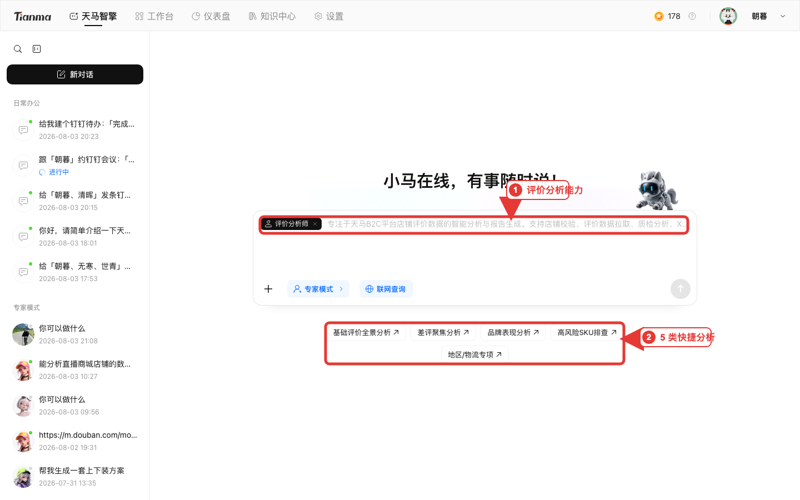
09 · 首页附件
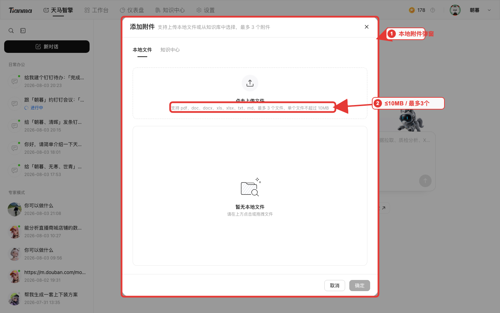
10 · 首页引用知识
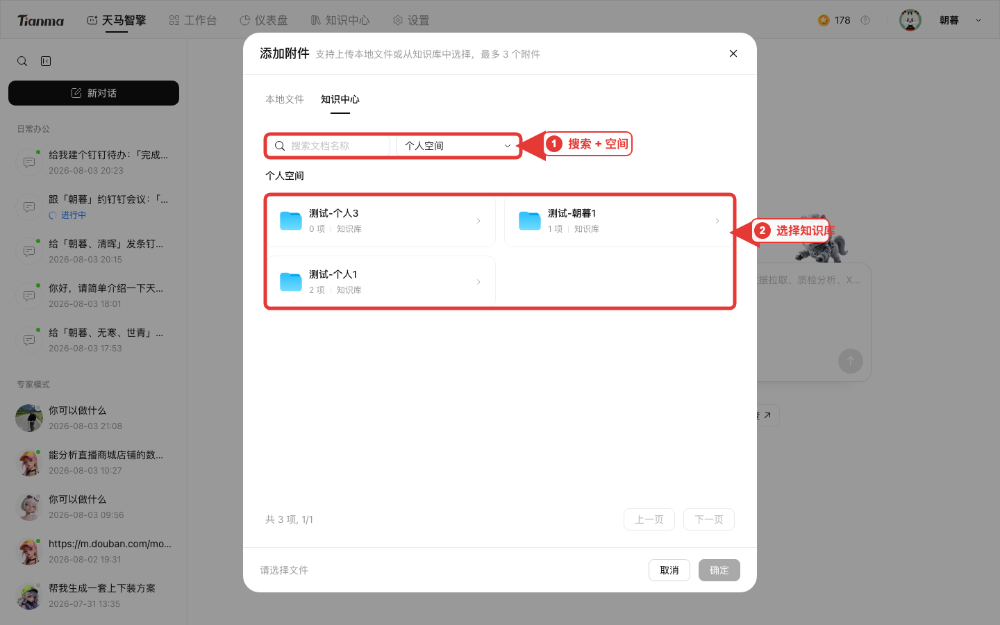
11 · 知识中心
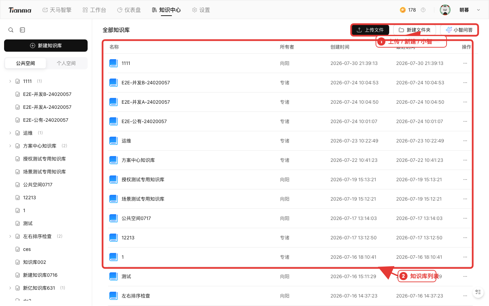
12 · 知识处理
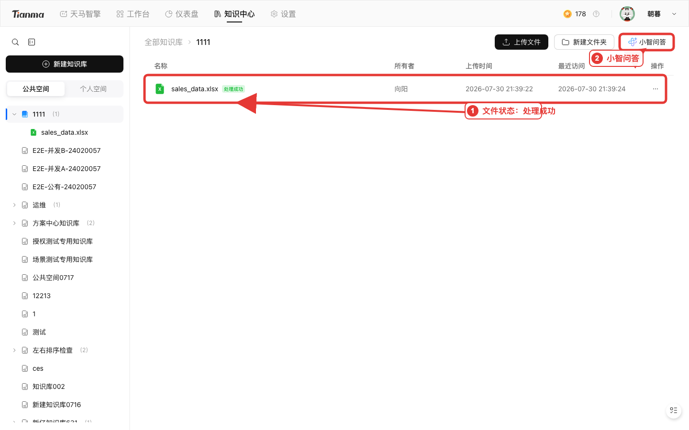
13 · 知识上传
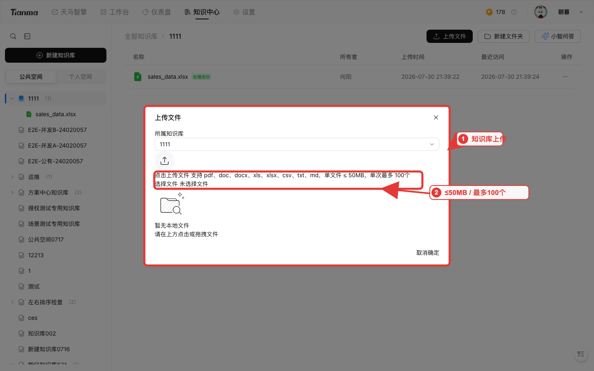
14 · 仪表盘
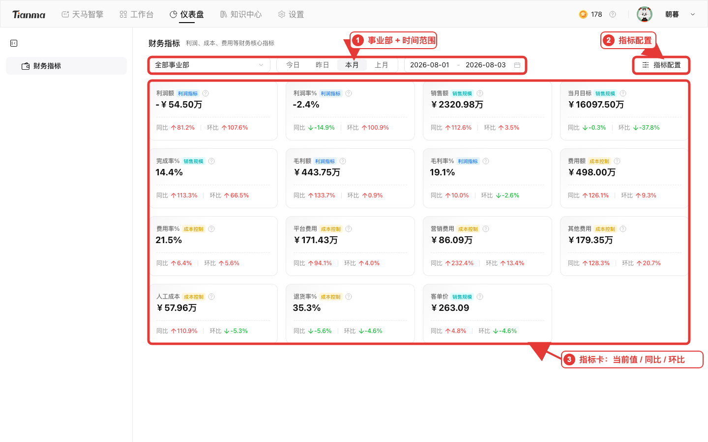
15 · 指标配置
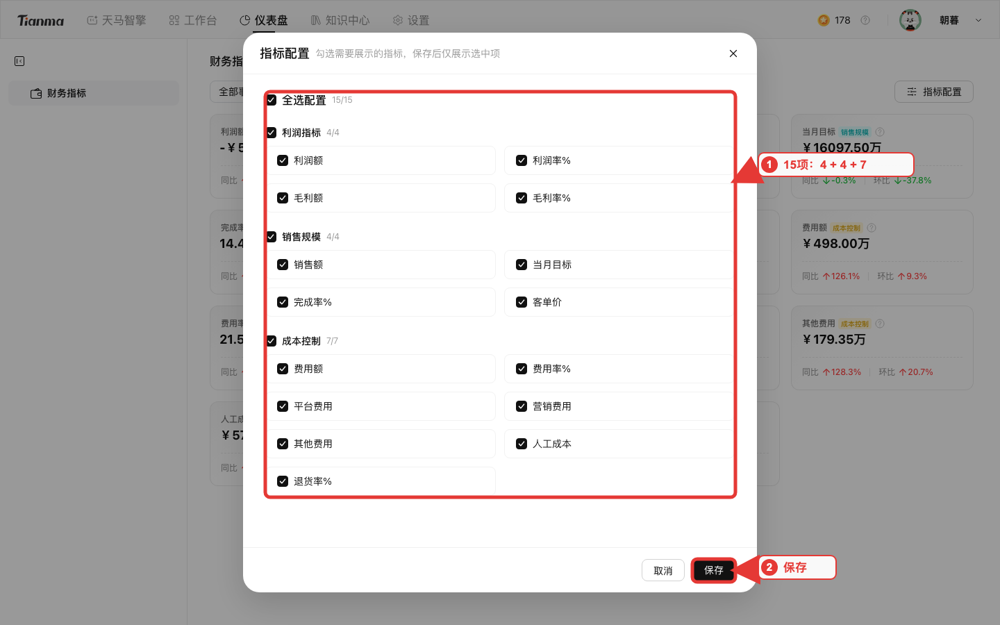
16 · 工作台
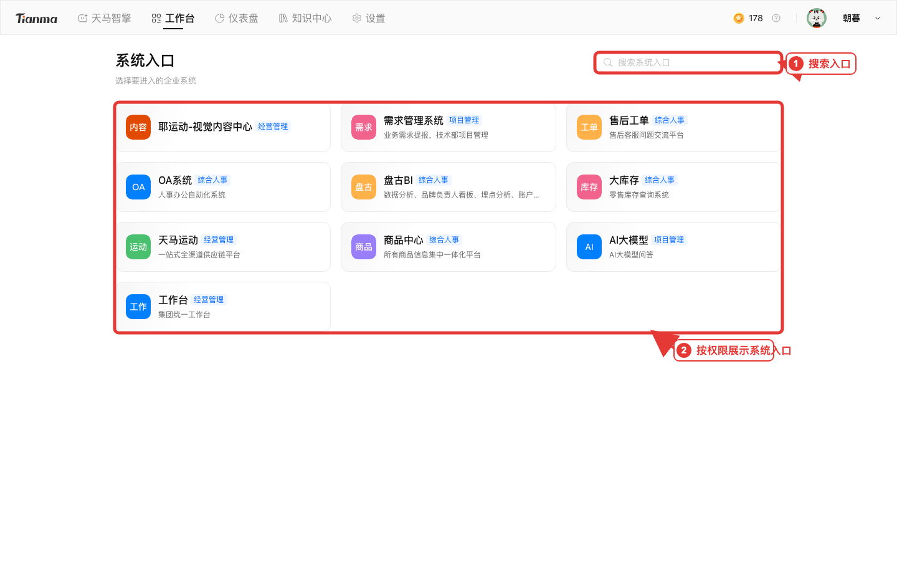
17 · 模块耦合
较大 / 复用材料优先走知识中心；处理成功后再引用
18 · 两条材料路径
| 路径 | 格式 | 单文件 | 单次数量 | 适用 |
|---|---|---|---|---|
| 首页直接附件 | pdf/doc/docx/xls/xlsx/txt/md | ≤10MB | 最多3个 | 临时、少量 |
| 知识中心 | 另支持 csv | ≤50MB | 最多100个 | 较大、复用 |
19 · 能力边界
事实 · 权限 · 执行
可能错误或遗漏：重要结论回查来源
没有提供或授权的数据不会自动获得
外部发送、审批、下单前必须人工确认
20 · V1 共建
点击平台“问题反馈”
跳转钉钉链接
填写场景 / 步骤 / 期望与实际
附脱敏截图、时间与影响
21 · QA
为什么选不到知识文件？
什么时候用专家模式？
仪表盘指标怎么看？
为什么工作台入口不同？